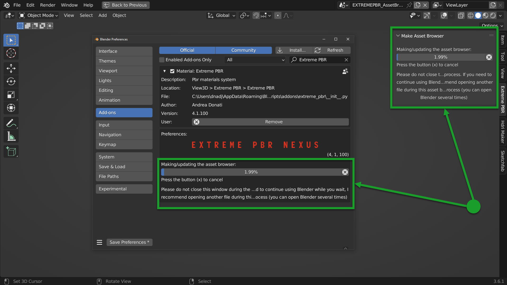
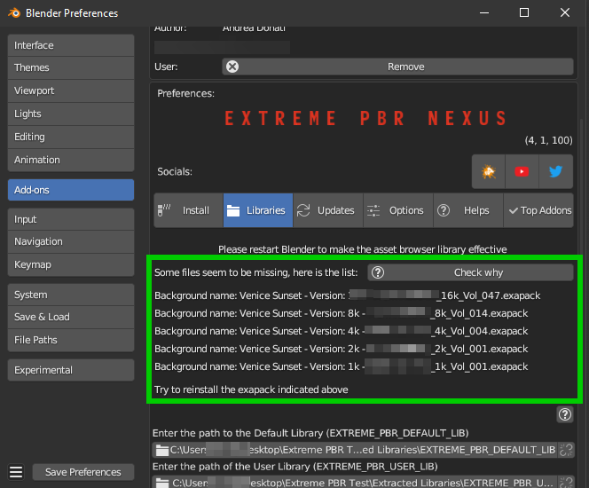

Make Asset Browser
Video Tutorial
Here below is indicated the procedure to create the asset browser
Introduction
What convinced me to do this function is the mere fact of having the possibility to apply only the Materials on the fly directly from the Asset Browser. But at the moment I think that the use of Extreme PBR is more complete through its interface (Which already has its own Browser) I received many requests regarding the asset browser which led me to create this new feature. But at the moment Blender’s Asset Browser has some big limitations on the Python side, so many things still can’t be done.
Surely in the future they are planned.
Create Asset Browser
Note
In order to create Asset Browser, you must be in a new Blender project, not saved, this is essential, it is a matter of security not to risk damaging your projects In addition, make sure you have a version 4.1.100 or higher of Extreme PBR
{kind=link}
To create the asset browser, you must have installed the Extreme PBR libraries.
Video Tutorial example into HDRi Maker (Is the same procedure👍)
Steps
Procedure:
Open a new Blender project and do not save it (This is essential, it is a matter of security not to risk damaging your projects)
Make sure you have installed version 4.1.100 of Extreme PBR or higher
Press the “Open Options” button

Go to the “Libraries” tab, If all the libraries have been installed correctly, you should see a situation like this, they will be
Press the button in the list of buttons in the “Make Asset Browser” box to create the corresponding version also in the asset browser
During the process of Creating the asset browser, it may be necessary to wait a few minutes, you can interrupt the process by pressing the “X” button next to the progress bar, this will stop the process, but will already make the conversions done up to that moment effective
Restart Blender to make the changes effective
Set the Asset Browser in the Blender screen area:
{kind=link}
{kind=link}
Now in the list of assets you should see the new assets, repeat this operation for all the Extreme PBR libraries
See also
Current limitations in Asset Browser: Material applied via Asset Browser are of type Simple PBR described here: Material Editor (Simple PBR)
Installation Time
During the installation, if everything went well, you should see a situation like this:
{kind=link}
During the installation a progress bar appears until the asset browser is created, this can take a few minutes, it depends a lot on the speed of the hard disk and the speed of the single core of the processor.
Note
If you interrupt the process, by pressing the button (X) next to the progress bar, this will stop, but the conversions made up to that moment will already be effective.
Tip
This process is also used to update the library in case there are innovations in the new versions of Extreme PBR, so the creation process will always be repeated to eventually replace the files with the new updated versions.
Missing Files during the asset browser creation
It can happen that during the process of creating the Asset Browser through the buttons present in the options of Extreme PBR Example: (Only from Extreme PBR version 3.0.113 and higher)
That a message like this occurs:
{kind=link}
In this case the message is useful because during the process of creating the asset browser the Extreme PBR has detected some missing files from the library, the reasons can be various, among the most common I have been told that some files have been mistakenly deleted manually (It can happen), among the less common, the cause is still to be understood well.
What does this message mean?
There is a list of missing files in this message, in which it is indicated:
Material Name: This is the name of the missing Material
Version: This is the version of the material, for example it could be the 1k, 2k, 4k, 8k version or another name (It’s not very important)
From: This is important because it says from which Volume the missing file comes from, so the name of the volume.exapack
So in the end, this is very useful to understand which Volume exapack contains that file, so that if you have to reinstall or download that package again, you will know exactly which one to install.